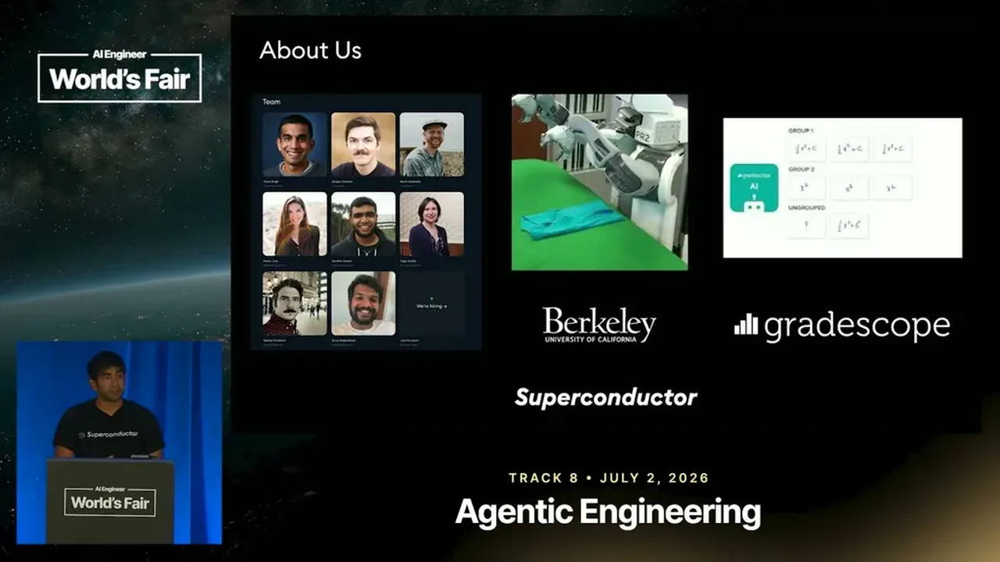
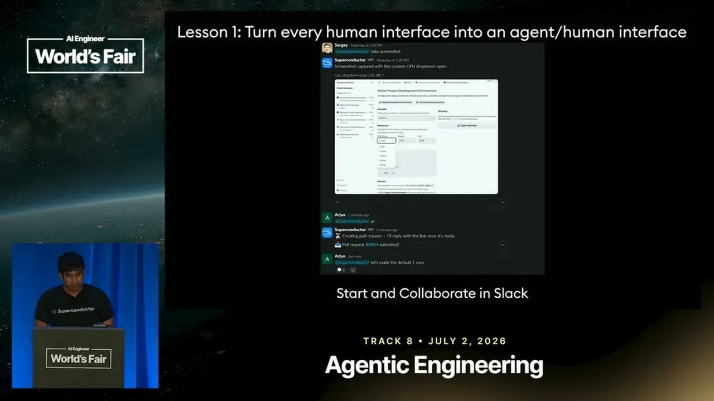
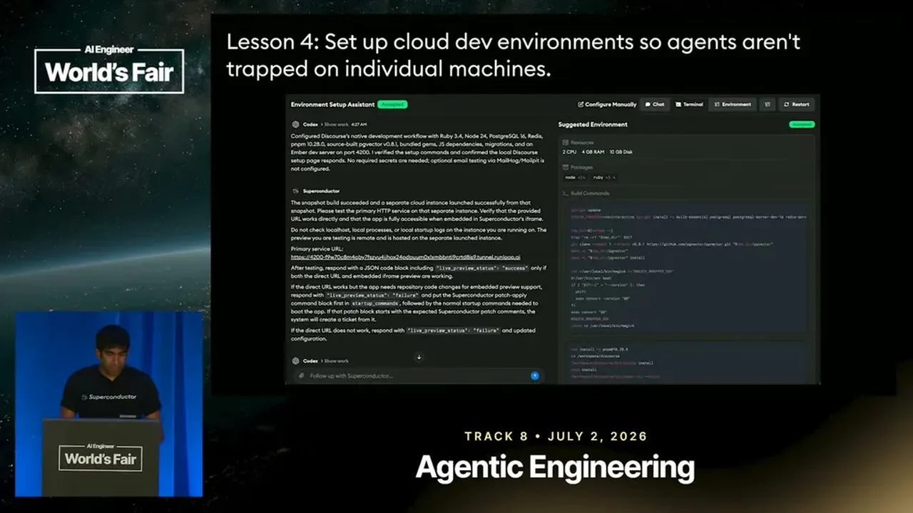

Singh's first lesson is to avoid locking a team into one model or harness because the best option can change weekly, open-weight models like GLM are now competitive and cheaper, and the companies selling tokens are incentivized to sell more of them than a team actually needs.
“the incentives of the people selling you tokens aren't really aligned with yours”
▶ watch at 01:33
Rather than trapping an agent on a developer's laptop or even just in Slack, Superconductor keeps the same agent session addressable and visible across Slack, a desktop/mobile app, and GitHub, so context carries over regardless of where someone engages with it. A 'meeting bot' extends this further by listening to a full meeting (demonstrated with a 4-hour Google Meet) and automatically creating tickets from ideas raised, linking to existing work rather than duplicating it.
“the agent didn't forget what you did in one place in Slack when you go and talk to it from GitHub, it's the same”
▶ watch at 03:36“this is a 4-hour meeting of a Google Meet. You just kind of invite the bot to Meet or Zoom or Teams or whatever it might be. And it listens all day.”
▶ watch at 06:41
Running agents in an isolated cloud environment rather than on individual laptops removes 'lid anxiety' but more importantly limits what an agent can access. Singh argues agents should only be given the credentials they need and their network access should be explicitly scoped, because increasingly autonomous, resourceful agents can find and use stray credentials on a developer's machine in ways that cause real damage, and sandboxing also lets non-technical team members trigger real engineering work directly.
“you should only give your access give your agents access to only what they need”
▶ watch at 10:17“it finds a token on your laptop that it can use and it thinks it's working with staging, but actually it's production and now it just deleted everything”
▶ watch at 10:47Because public benchmarks like SWE-bench may have little to do with a team's actual stack (their example: SWE-bench is Python, Superconductor is Ruby on Rails), Singh recommends selecting real pull requests from your own repo and benchmarking harnesses against them for quality, cost, and time. On their codebase, Anthropic models kept improving in quality but not speed and were noticeably more expensive, Codex and Cursor were fast and cheaper, and open models kept improving but remained slower; this data, not just vibes, drove them to switch their default to Codex, with roughly 1.5 billion tokens spent across the team in a month and Codex running four times as many sessions as Claude Code at lower overall cost.
“the Anthropic agents have just been consistently getting better, but not really any faster”
▶ watch at 13:55“for our our our our relatively small team, we had 1 and 1/2 billion tokens over the past month”
▶ watch at 16:01“Codex had four times as many sessions, and it was cheaper overall”
▶ watch at 16:31
| Stance | Claim | t |
|---|---|---|
| recommends | Teams should stay model and harness agnostic because the incentives of companies selling tokens aren't aligned with the buyer's incentive to spend only what's needed. | 01:33 |
| asserts | The same agent session persists across interfaces, so context from a Slack conversation carries over when someone continues the conversation from GitHub instead of the agent starting over. | 03:36 |
| recommends | Agents should be given access to only the credentials and network destinations they actually need, rather than running with broad access on a developer's machine. | 10:17 |
| warns | An agent running with broad, unscoped access can find a leftover token on a developer's laptop, mistakenly believe it's operating on staging when it's actually production, and delete real data. | 10:47 |
| asserts | A meeting bot can be invited into any video call, listen for a full multi-hour meeting, and automatically create or link tickets based on ideas raised, with no manual triggering. | 06:41 |
| asserts | On Superconductor's own codebase benchmark, Anthropic's agents kept getting better in quality over time but not faster, while Codex and Cursor were comparatively fast and good. | 13:55 |
| asserts | Superconductor's relatively small team consumed about 1.5 billion tokens over the past month, with roughly 99.9% of pull requests being agent-generated and all of it human-reviewed. | 16:01 |
| asserts | After switching their default to Codex based on benchmark data, Codex ran four times as many sessions as Claude Code while costing less overall. | 16:31 |
Machine-readable copy embedded in this page (script#ontology) and in the corpus ontology.